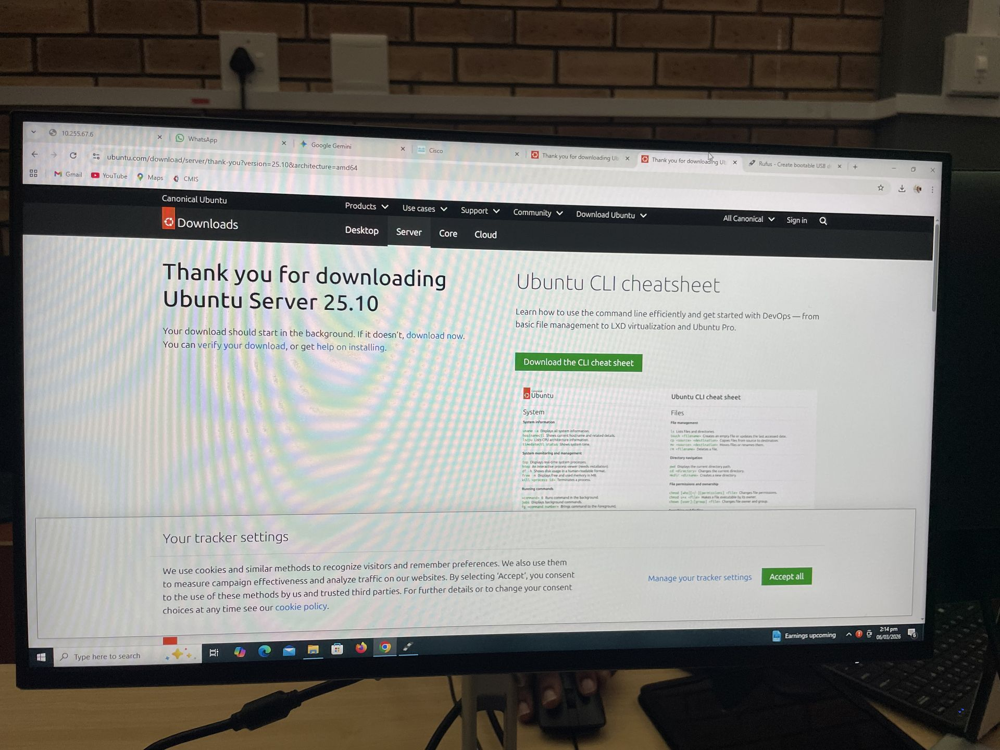
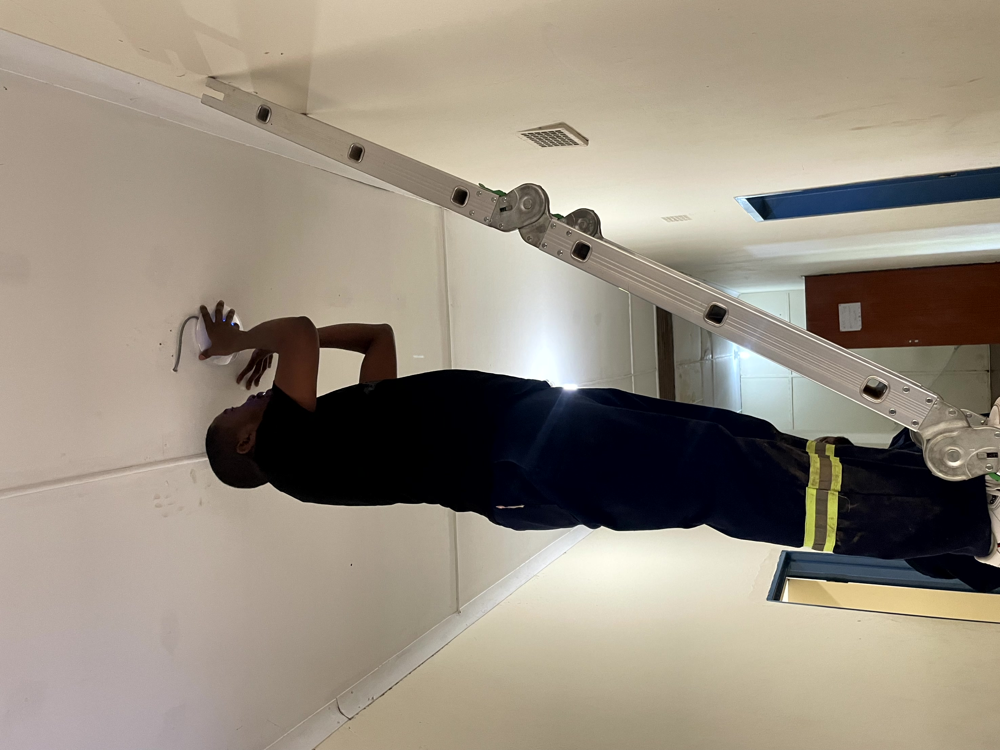
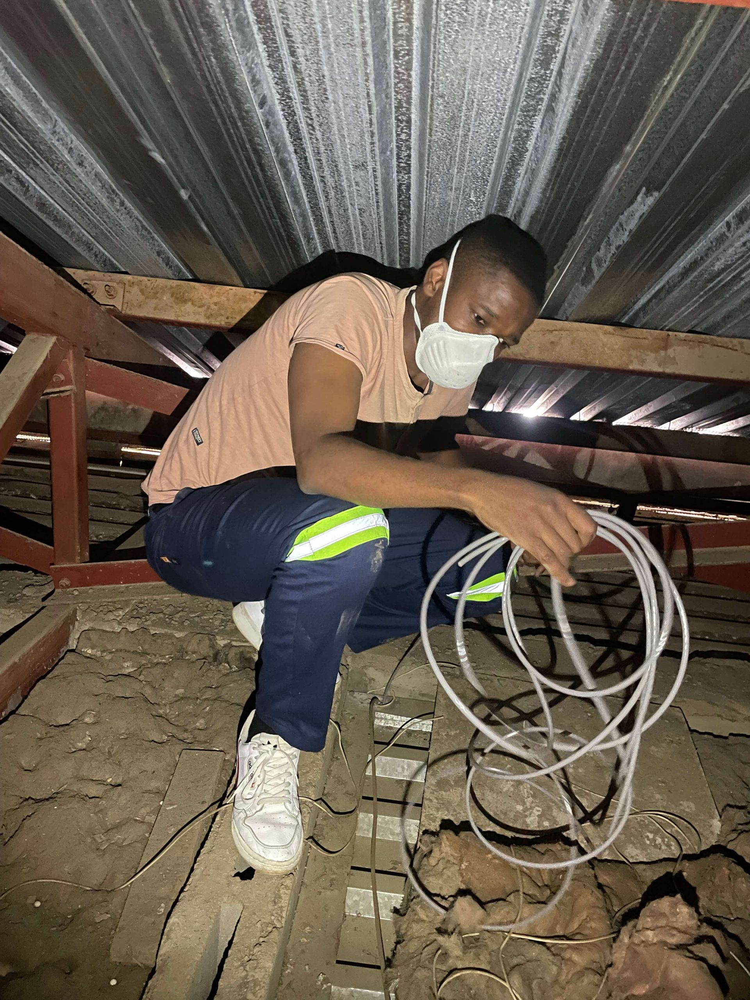
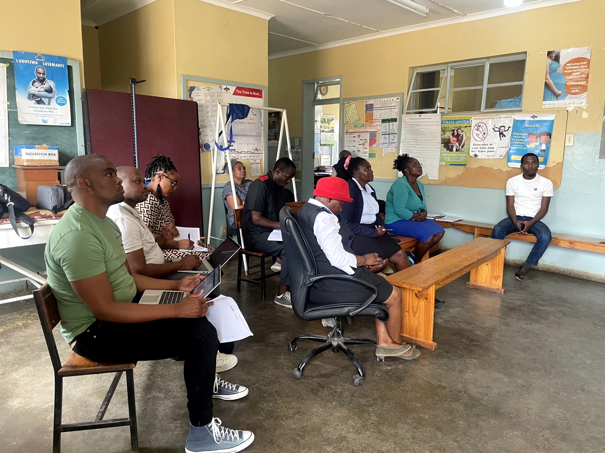
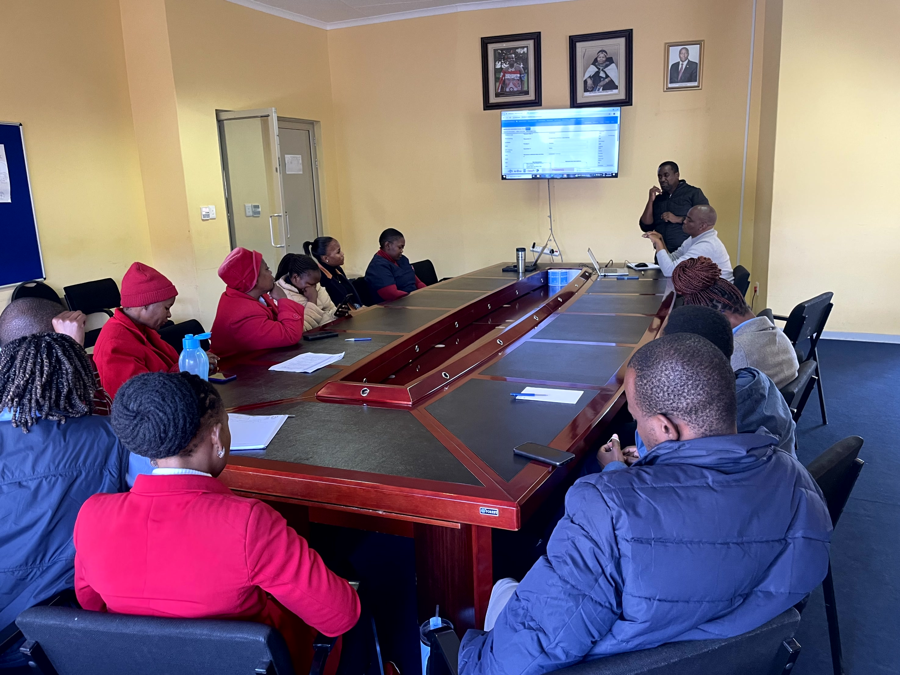

hop 04
// gallery
Photo Gallery
A visual showcase of networking deployments,
data analytics projects, AI work, infrastructure
and professional milestones.

NETWORKING
Rack Installation
Network Infrastructure Support
View Image

NETWORKING
Access Point Deployment
Wireless Infrastructure
View Image

DATA ANALYTICS
Healthcare Analytics Dashboard
Public Dataset • Kaggle
View Project
NETWORKING
Rack Installation
Network Infrastructure Support
View Image
NETWORKING
Access Point Deployment
Wireless Infrastructure
View Image

Field Work
Ethernet installation
Ethernet CAT6
View Project

EVENTS
FARSAR Support
Data Reporting
View Image

QUALIFICATIONS
Honours Degree Milestone
Durban University of Technology
View Image

FIELD WORK
Healthcare System Training
System Support & Training
View Image